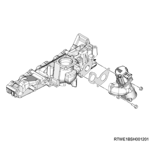
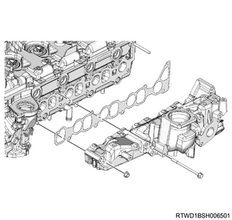

Inlet manifold removal (4JJ1)
1. Battery ground cable disconnect
1. Open the engine hood assembly.
2. Disconnect the battery ground cable from the battery.
Caution
- Do not disconnect within 1 minute after turning OFF the ignition switch.
2. Engine cover removal
1. Remove the engine cover from the engine.

- Engine cover
3. Boost pressure sensor disconnect
1. Disconnect the connector from the boost pressure sensor.

4. Intake air duct removal
1. Remove the intake air duct from the intake throttle valve and the intercooler.
Note
- Remove the part together with the intake hose.

5. Oil level gauge guide tube removal
1. Remove the oil level gauge from the oil level gauge guide tube.
2. Remove the oil level gauge guide tube from the crankcase.
6. A/C compressor drive belt removal
1. Remove the A/C compressor drive belt from the pulley.

- A/C compressor drive belt
7. A/C compressor assembly disconnect
1. Remove the A/C compressor assembly from the A/C compressor bracket.

- A/C compressor bracket
- A/C compressor
8. A/C compressor bracket removal
1. Remove the A/C compressor bracket from the cylinder head.

9. Intake throttle valve disconnect
1. Disconnect the connector from the intake throttle valve.
10. Intake throttle valve removal
1. Remove the intake throttle valve from the inlet manifold.
2. Remove the gasket from the intake throttle valve.

- Intake throttle valve
- Gasket
11. Fuel leak-off hose removal
1. Remove the fuel leak-off hose from the leak-off pipe.
12. Leak off pipe removal
1. Disconnect the vacuum hose from the vacuum pipe.
2. Disconnect the fuel leak-off hose from the leak-off pipe.
3. Remove the harness bracket from the inlet manifold and the common rail (fuel rail) bracket.
4. Remove the leak-off pipe from the inlet manifold.

13. Vacuum hose disconnect
1. Disconnect the vacuum hose from the inlet manifold.
14. Injection pipe removal
1. Remove the clip from the injection pipe.
2. Remove the injection pipe from the injector and the common rail (fuel rail) assembly.

Caution
- Do not reuse the injection pipe.
15. EGR valve disconnect
1. Disconnect the connector from the EGR valve.
16. EGR valve removal
1. Remove the EGR valve from the inlet manifold.

17. Inlet manifold removal
1. Remove the inlet manifold from the cylinder head.

2. Remove the gasket from the inlet manifold.